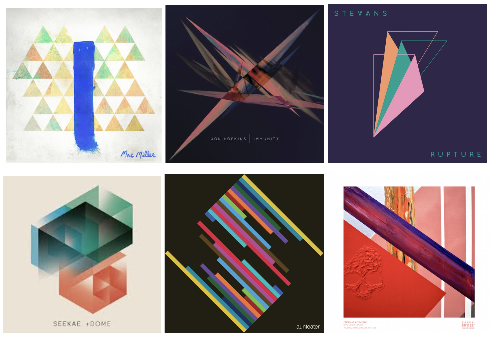
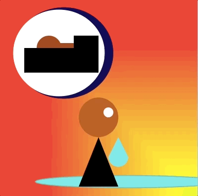

Overview
In this unit students get acquainted with the p5 canvas coordinate system, drawing shapes and colors on it. Programming concepts covered include calling built-in p5 functions with different parameters, working with variables (both built-in and custom), and using controlled randomness.
- Code as a creative and expressive medium
- The concept of creating design systems: programmatically defining ranges for positions, dimensions, and colors, by using variables, randomness, and repetition. Drawing as collaboration between designer and system.
- Understand the basics of computation (execution flow, function calls, variables)
- Understand the basics of 2D computer graphics: drawing on a canvas, the coordinate system, calling drawing functions, setting colors in different color spaces
- Understand the application of variables, repetition and randomness to the creation of parametric drawings
1. Get familiarized with p5
Write and run sketches on the p5 online editor, place figures in the coordinate system, call functions with different sets of parameters, look them up in the p5 reference
2. Create a drawing using variables and randomness
Use variables and the random function to create a drawing that varies each time the sketch is run.
3. Understand color models
Use the RGB (Red, Green, Blue) and HSB (Hue, Saturation, Brightness) color systems. Define color ranges and palettes
Big Ideas
- Code as a creative and expressive medium
- The concept of creating design systems: programmatically defining ranges for positions, dimensions, and colors, by using variables, randomness, and repetition. Drawing as collaboration between designer and system.
Enduring Understandings
- Understand the basics of computation (execution flow, function calls, variables)
- Understand the basics of 2D computer graphics: drawing on a canvas, the coordinate system, calling drawing functions, setting colors in different color spaces
- Understand the application of variables, repetition and randomness to the creation of parametric drawings
Lesson Sequence
- LA 1 Create a Grayscale Drawing
Final Project - Abstract Album Art

In Fine Art, we often use abstraction to represent complex feelings, emotions, and moods by using shapes, strokes, and convey those feelings.
For some people with a condition called synesthesia, this is how they experience the world all the time. While scientists don't completely understand synesthesia, the rare phenomenon causes people to experience two senses at once. For example, when people hear music, they might also "see" colors. Or when they taste a flavor, they might also hear a certain tone.
In this project, we are going to imagine that we all have synesthesia. You will pick a song or album and create a dynamic (it changes!) album cover that represents the mood, emotions, and feelings present in the song/album. You should do your best to focus on representing these things with colors and shapes - for example, a dark, moody song might have a dark color palette. A song with a particular rhythm might have shapes in a pattern that mirror this beat.
While it's natural to want to utilize text or images, we are only going to use the tools we have learned so far in p5 for this project.
Requirements:
- Use shapes that we covered in this unit
- Use built in variables that make your design dynamic (size or color changes with mouse position)
- Create & use custom variables to control two or more elements of your design
- Have your design change slightly each time it is run by using the random feature with some of your custom variables.(EX- have parts of your design move slightly each time the program is run, or shift slightly in color)
Writing Prompt:
Write a paragraph explaining your design decisions, including color choice and composition, and why it is representative of the album you chose.
Sample Output

Extensions:
- Level 1: Students can complete and justify an album art cover.
- Level 2: Level 1 AND…
Students leave thoughtful comments in their code that make it easier for an outsider to read.
- Level 3: Level 2 AND…
Student code is free from superfluous lines (every line of code has a purpose) and is efficient.
Students can create an 'album launch' website to house their project. Research HTML and CSS on their own!